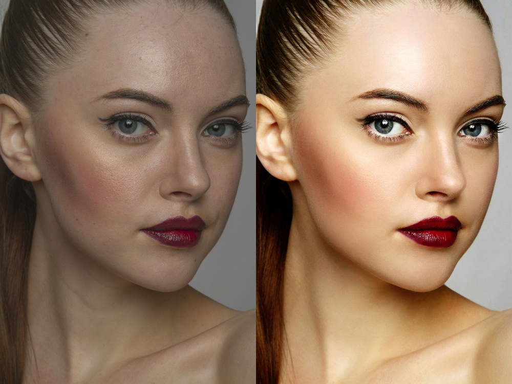

Hochwertige Bildretusche für anspruchsvolle Projekte
In der Schweizer Fotografieszene ist die Bildretusche ein unverzichtbarer Teil der Fotografie, um jedes Bild in seiner besten Form zu präsentieren. Unser Fotograf bietet maßgeschneiderte Retuschierdienste an, die auf die spezifischen Anforderungen und Ästhetik jedes Kunden zugeschnitten sind. Von der Hautretusche bis zur Objektentfernung wird jede Anpassung mit Präzision und Sorgfalt durchgeführt, um sicherzustellen, dass Ihre Bilder einwandfrei aussehen.
Kreative Bildkomposition und Effekte für einzigartige Ergebnisse
Fotografie in der Schweiz bedeutet auch, kreative und einzigartige Bilder zu schaffen, die Aufmerksamkeit erregen. Unser Fotograf beherrscht die Kunst der Bildkomposition und bietet umfassende Dienstleistungen für die Erstellung von visuell ansprechenden Bildern an. Von der Hinzufügung von Effekten und Filtern bis hin zur Zusammenstellung mehrerer Bilder zu einem beeindruckenden Kompositbild - wir bieten die Werkzeuge und das Know-how, um Ihre Visionen zum Leben zu erwecken.
Farbkorrektur für lebendige und authentische Bilder
n der Fotografie ist die Farbkorrektur ein entscheidender Schritt, um Bilder lebendig und authentisch wirken zu lassen. Insbesondere in der Schweiz, wo natürliche Schönheit und präzise Darstellung geschätzt werden, ist eine professionelle Farbkorrektur unerlässlich. Unser Fotograf verfügt über umfassende Erfahrung in der Anpassung von Farben und Kontrasten, um sicherzustellen, dass jedes Bild die richtige Stimmung und Atmosphäre vermittelt. Die Farbkorrektur beginnt mit einer genauen Analyse jedes Bildes. Dabei werden Aspekte wie Belichtung, Weißabgleich, und Farbton sorgfältig bewertet, um das volle Potenzial des Fotos auszuschöpfen. Unser Fotograf verwendet fortschrittliche Techniken und Werkzeuge, um Farben präzise anzupassen und sicherzustellen, dass die natürlichen Farben des Motivs erhalten bleiben.
Darüber hinaus berücksichtigen wir die individuellen Vorlieben und den Stil unserer Kunden. Ob Sie lebendige Farben für eine kreative Aufnahme bevorzugen oder eine subtile Farbkorrektur für ein elegantes Porträt wünschen - unsere Dienstleistungen sind darauf ausgerichtet, Ihre Erwartungen zu übertreffen. Unser Ziel ist es, Bilder zu liefern, die nicht nur technisch einwandfrei sind, sondern auch eine emotionale Verbindung schaffen. Durch gezielte Farbkorrektur können wir die visuelle Wirkung eines Fotos verbessern und seine Aussagekraft verstärken. Zusätzlich zur Farbkorrektur bieten wir auch Beratungsdienste an, um unseren Kunden dabei zu helfen, das Beste aus ihren Bildern herauszuholen. Ob für private Erinnerungen oder geschäftliche Projekte - wir stehen Ihnen zur Seite, um Ihre Visionen durch hochwertige Fotobearbeitung zu realisieren.